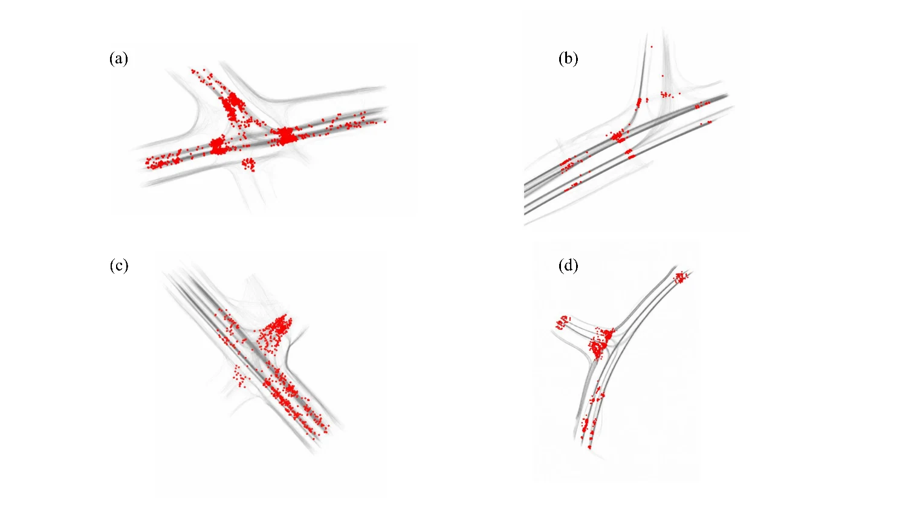
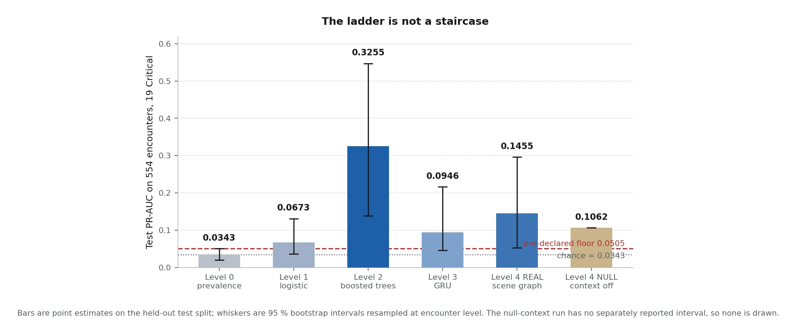
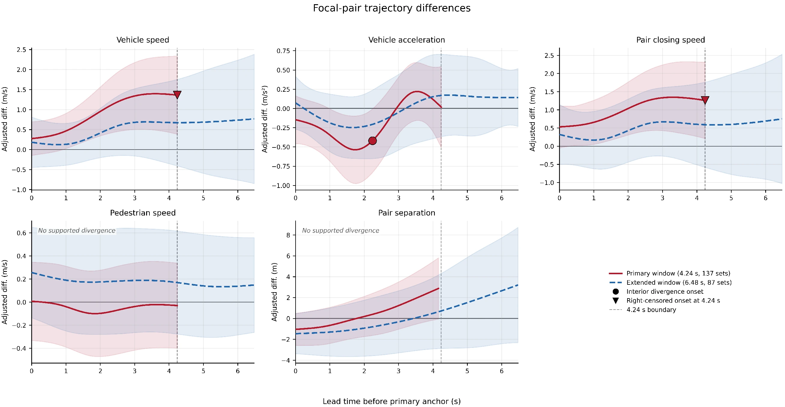
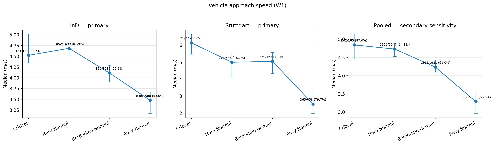

This research examines where predictive information about pedestrian–vehicle conflict severity is concentrated, when Critical and Normal trajectories become statistically distinguishable, and how these differences manifest in observable road-user behaviour.
Research basis
Naturalistic drone trajectories from four unsignalized intersections in Germany were obtained from the inD and DeepScenario Open 3D datasets. Road-user trajectories were harmonized to a common spatial and temporal representation, and pedestrian–vehicle encounters were reconstructed from overlapping movement paths. Each focal interaction was referenced to its conflict location and characterized using post-encroachment time (PET) and minimum time-to-collision (mTTC), with the two measures jointly defining the severity outcome.
Recording-level data partitions and strictly pre-conflict observation windows were established for predictive evaluation, so that related encounters and information from later in the interaction were not used to characterize its earlier state.

Predictive modelling
The predictive analysis investigates how different representations of pedestrian–vehicle interactions influence conflict-severity prediction. A controlled modelling framework is established using consistent severity labels, pre-conflict observation windows, and recording-level data partitions. Five modelling approaches are evaluated: a prevalence-based reference, Logistic Regression, Gradient Boosting, a Gated Recurrent Unit (GRU) network, and a GATv2–GRU graph-attention model.
Logistic Regression and Gradient Boosting evaluate linear and nonlinear relationships within focal-pair kinematic features. The GRU examines whether preserving the temporal sequence provides additional predictive information, while GATv2–GRU incorporates surrounding road users through a dynamic interaction graph. A separate context-ablation comparison examines the incremental contribution of surrounding traffic under the same graph architecture. Predictive performance is compared on a common held-out dataset to determine where the strongest discriminative information resides.
The clearest predictive separation is obtained from nonlinear relationships in focal-pair kinematics. More elaborate sequence and scene representations do not establish a consistently supported incremental advantage under the evaluated conditions. This distinction is assessed on the same held-out encounters rather than inferred from differences in model complexity.

Matched temporal comparison
Predictive performance identifies useful information but does not establish when the underlying motion patterns become distinguishable. Critical encounters were therefore paired with Normal close calls under comparable measured approach conditions. The matched design accounts for approach geometry, vehicle speed and relative entry timing, with remaining entry-timing differences carried into the temporal analysis as an explicit adjustment.
Trajectories were aligned by conflict-point passage and analyzed through spline-based linear mixed-effects models. Matched-set contrasts preserve the evolution of vehicle and pedestrian motion over time, while simultaneous confidence bands and multiplicity-aware inference distinguish supported differences from isolated fluctuations. Sensitivity checks and reserved matched encounters were used to examine the consistency of the temporal findings.
Within the supported observation window, Critical encounters show greater vehicle approach speed and faster pedestrian–vehicle convergence, followed by a later relative deceleration response. The measured surrounding-traffic variables do not exhibit a correspondingly supported temporal signature under the same inferential framework.

Behavioural interpretation
The wider encounter catalogue is subsequently examined across ordered severity groups to connect the statistical contrasts with observable road-user actions. Vehicle approach speed, deceleration, yielding and evasive manoeuvres are assessed alongside pedestrian speed and directional adjustments. The stronger and more consistent severity-related associations are found in vehicle-side approach and response behaviour, whereas the measured pedestrian responses show less uniform differentiation.

Research contribution
Integrating controlled predictive evaluation, matched time-resolved comparison and behavioural assessment connects three complementary aspects of pedestrian–vehicle safety: where discriminating information lies, how early kinematic differences are observable, and which road-user responses accompany severity. This provides a continuous analytical account from observed trajectories to interpretable conflict behaviour, while keeping the conclusions specific to the measured encounters and supported comparisons.